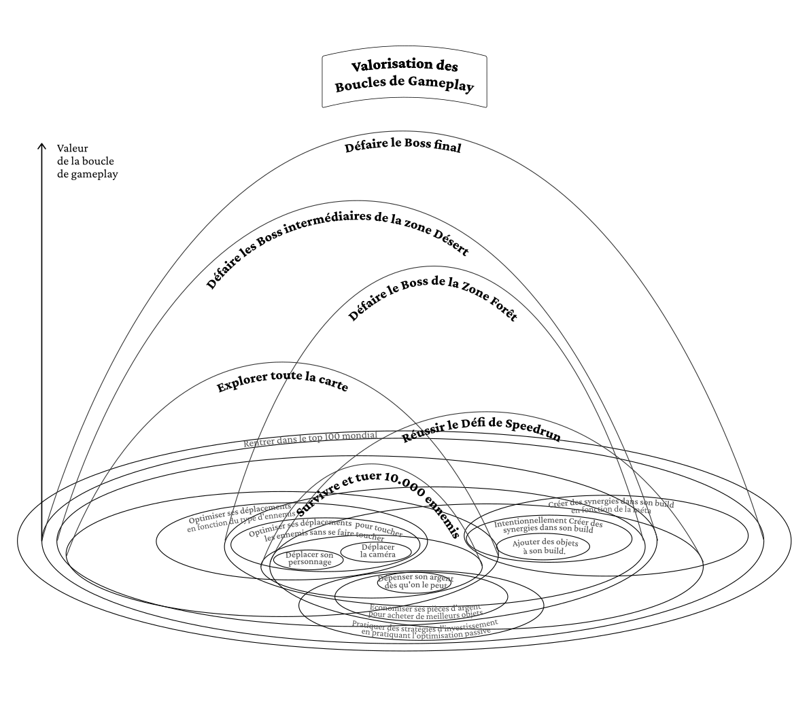
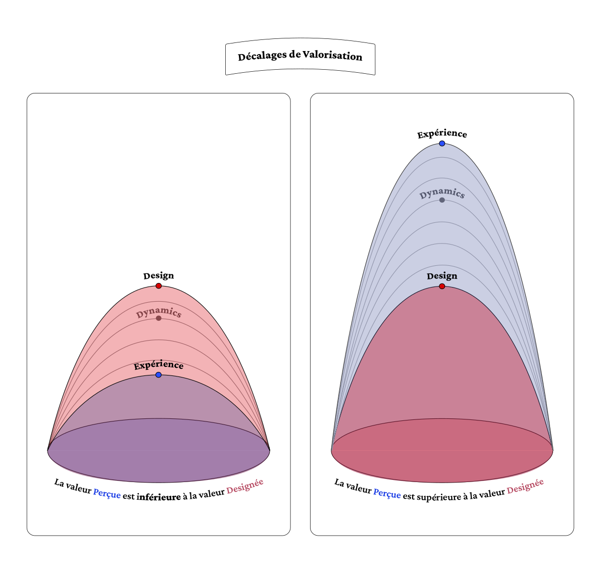

Ezéchiel Sene-Boileau
Towards a New Design of Musical Rewards in Video Games
Thesis prepared for obtaining the DNSEP design mention Digital Creation 2026
Higher School of Art and Design of Saint-Étienne : ESADSE
Under the direction of David-Olivier Lartigaud, Liu ZheJun
Abstract
The question of what constitutes a musical reward in video games remains poorly theorized. Currently, the closest equivalent is musical feedback, classified among sensory feedbacks in Phillips's (2018) taxonomy: brief stimuli that accompany other rewards rather than constituting rewards in their own right. Musical feedback illustrates the problem raised by Lewis-Evans (2013), according to which video game reward design generally prioritizes motivation (wanting) at the expense of pleasure (liking), raising important ethical questions.
This thesis proposes to define the concept of musical reward system by distinguishing it from simple musical feedback. Drawing on Berridge's (2009) neuropsychological model, we establish that a complete reward articulates three components: liking (hedonic pleasure), wanting (anticipatory will), and learning (predictive associations). We demonstrate that music intrinsically possesses these three properties through its prediction mechanisms and tension-resolution structures.
The musical reward system exploits these intrinsic properties to create a complete, ethical, and aesthetic reward experience.
Keywords: video game music, reward systems, musical rewards, musical anticipation, flow, ludic sound design
- INTRODUCTION
- CHAPTER I - Schematization of Reward Systems within Video Game Systems
- CHAPTER II - Music As Reward System
- CHAPTER III - The Musical Reward System: Definition and Implications
- CONCLUSION
- BIBLIOGRAPHY
TABLE OF CONTENTS
Glossary
Isomorphism: A correspondence between two sets organized in a similar manner, where each element of one corresponds to a unique element of the other, and this correspondence preserves the structure in both directions.
Wanting: The component of will/desire in the reward system.
Liking: The component of pleasure in the reward system.
Learning: The component of learning in the reward system.
Incentive salience: A dopaminergic mechanism that makes certain stimuli attractive.
Cognitive load: The amount of mental resources mobilized by a task.
Eudaimonic: Pleasure related to meaning-making, personal development, and competence.
Flow: The flow state, theorized by Mihaly Csikszentmihalyi, is a state of cognitive and emotional pleasure that appears when the difficulty of the challenge is balanced relative to the player's skills.
Hedonic: Pleasure based on pleasant and immediate sensations.
Gacha / Gacha games: Games based on monetized random draw systems.
Loot: Spoils, items obtained as rewards.
Build: In video games, a build refers to the specific combination of characteristics, skills, equipment and/or attributes that a player chooses for their character in order to adopt a particular play style.
Museme: Minimal units of musical meaning that function as culturally established codes.
Tonal system: In music, the tonal system is a set of hierarchical relationships between notes, organized around a central tonality (the tonic). This system establishes predictable expectations: certain chord progressions sound 'resolved,' others create tensions that call for resolution. These expectations, learned culturally, allow composers to play with musical predictability.
Sabar: Refers simultaneously to a festive event organized by women, a drum orchestra, and a dance. The orchestra brings together several instruments (lamb, mbeng mbeng, gorong talmbat, ndeer, gorong mbabas, khine). This genre relies on syncopated and rapid motifs and punctuates listening with bakks: codified rhythmic phrases that musicians play together. These motifs serve as a common base, somewhat like recognizable standards for all. This ensemble forms a complex and coherent rhythmic fabric.
Megabonk: A third-person roguelike survival game developed and published in 2025 by solo developer vedinad. Players navigate procedurally generated 3D maps with verticality, fighting increasingly powerful waves of enemies and bosses.
Red Dead Online: Red Dead Online is the multiplayer version of Red Dead Redemption 2. The player creates their own character and explores a vast open world in the American West, with numerous cooperative missions. Unlike its offline version which centers on narrative storyline, here the focus is primarily on character progression and online interactions.
Introduction
According to Phillips's (2018) taxonomy, video game rewards can take several forms. Rewards of access open new spaces or resources (levels, map zones). Rewards of facility improve player capabilities (power-ups, new skills). Rewards of sustenance prolong in-game survival (extra lives, med kits). Rewards of glory have no direct impact on gameplay but are an integral part of the experience: points, achievements, rankings. Rewards of praise function as verbal or textual encouragement that valorizes performance without modifying gameplay: congratulatory phrases, oral validations. Finally, rewards of sensory feedback translate into visual, haptic, or sound returns triggered by player actions: vibrations, sounds, animations.
Musical reward is relegated here to the "sound" subcategory of sensory feedbacks. This classification is not insignificant: it reduces the field of musical reward to a simple response to an action, an informative or motivating signal, rather than a full-fledged reward.
A sound feedback typically corresponds to a short musical or acoustic signal; for example, a jingle at the end of a level, a bell indicating successful action, or a sound that adds or cuts out to signal to the player that an interaction has occurred. In these cases, the sound informs or reinforces a behavior, but doesn't seek to provoke musical pleasure in itself.
However, according to Berridge's neuropsychological model (2009), a complete reward comprises three distinct components: wanting (will or desire to obtain the reward), learning (predictive associations allowing reward anticipation), and liking (hedonic pleasure felt upon obtaining it). These three mechanisms activate distinct brain circuits and fulfill complementary functions in the reward experience.
The problem is that most research and developer advice on rewards in video games focuses primarily on wanting and dopaminergic mechanisms: how to create the desire to play, how to maintain wanting, how to maximize engagement. The pleasure the player will feel is often presupposed but rarely explicitly designed.
Lewis-Evans (2013) formulates that: "The game is designed to make you want to play it, even if you don't necessarily like/enjoy it" and underlines the ethical implications: people already stressed or lacking stimulation are more vulnerable to dopamine's desirable effects, so designing to maximize "wanting" potentially exploits those least capable of resisting these mechanisms.
To design truly effective and ethical musical rewards, it's necessary to consider all three reward components - wanting, learning, and liking - rather than focusing solely on wanting as current sound feedback does. This will allow exploration of different modalities for rewarding the player through music and clarify what a complete "musical reward system" could be, which I distinguish from simple "musical feedback."
It's from this observation that this thesis's problematic emerges:
How to go beyond musical feedback by designing a musical reward system in video games?
To answer this question, this thesis is articulated in three chapters.
The first chapter will explore the central role of reward in the game experience and identify current limitations of audio feedback.
The second chapter will propose to analyze music itself as a reward system, examining its structural, neuroaffective, and emotional properties, without reducing this approach to simple logic of anticipation or pleasure delivery.
Finally, the third chapter will propose paths for articulating musical reward systems within video game structures, and show how these devices can address the limitations of sound feedback, by shifting reward toward an experience that is simultaneously aesthetic, personalized, and complete.
Chapter I
Schematization of Reward Systems within Video Game Systems
This chapter examines how video game reward systems mobilize the three neuropsychological components identified by Berridge (2009): pleasure (liking), wanting, and learning. We will first establish the central function of rewards in the game experience, then analyze their taxonomic diversity. This analysis will reveal the specific limitations of current audio feedback, which do not constitute complete rewards in the neuropsychological sense.
1.1 Rewards provide pleasure
To concretely grasp this articulation between pleasure, progression and cyclical emancipation, we will rely on the example of the gameplay loops in Megabonk. This diagram allows us to visualize how gameplay loops nest within each other and how rewards mark their transitions.
Diagram 1 Gameplay Loops (from the game Megabonk)
Video game rewards generate pleasure by pacing player progression. This progression increasingly solicits player skills, creating flow conditions - the psychological state where activity becomes intrinsically pleasant (Csikszentmihalyi, 1990). Positive psychology work identifies two complementary sources of pleasure: the hedonic approach (immediate pleasant sensations) and the eudaimonic approach (construction of meaning and competence). This makes progression management an essential element of game pleasure (Redet, 2020).
1.1.1 By allowing the player to progress
Video games structure progression via nested gameplay loops, from the most basic to the most complex. The player first masters micro-actions (movements, camera), then action sequences (combat chains), then increasingly broad objectives (completing a level, mastering the game's meta-strategy).
This structure corresponds to cognitive load management - the quantity of mental resources mobilized by a task (Paas & Sweller, 2011; Mayer, 2005 for application to games). As the player masters and automates small action loops, their available cognitive load increases, allowing them to approach more complex loops. To maintain flow, this load must grow regularly and in a controlled manner: too slow, the player gets bored; too fast, they feel overwhelmed and quit.
Rewards mark the stages of this progression between gameplay loops. They signal to the player that they've mastered a loop and sometimes give them access to the next one. We can identify three reward temporalities corresponding to different loop scales: short-term (quick gains in micro-loops), medium-term (levels, quests that validate mastery of medium loops), long-term (complex objectives, complete collection attesting to mastery of large loops).
Games show us our progression (Hodent, 2020) as much as they constantly give us new terrain for improvement through different types of rewards. Tangible rewards notably: rewards of access, which open new spaces or resources and allow exploration of new gameplay loops; rewards of facility, which improve player capabilities and give access to more complex challenges they couldn't face before.
Intangible rewards like rewards of glory and rewards of praise also allow progression in larger loops. Materialized for example as global leaderboards, they push the player to master the game's meta-strategy and even evolve it - representing the most encompassing loops inside a game, requiring mastery of all other loops.
1.1.2 Emancipate from the repetitive cycle of a loop
Rewards don't simply mark progression: they create a linear curve that traverses and emancipates the player from gameplay's cyclical loops. Everything repeats inside a game, from simple jumping to death (Keogh, 2015).
Without rewards, the player would turn indefinitely in the same actions - jump, hit, repeat.
Reward is the emancipatory agent from this cyclical confinement. Where gameplay is represented by repeating loops, reward traces a progression curve that allows unlocking and navigating among superior loops. It marks the passage from a mastered loop to an even larger loop yet to be conquered, making us advance both socially and personally.
This emancipatory function culminates at game's end: once the largest gameplay loops are experienced, this often signals the arrival of the end or post-game. The final reward - ending cinematic, ultimate sword - signals that no other reward will ever surpass this one. It authorizes the player to exit the game itself, to free themselves from the obligation to repeat. Once tangible rewards are exhausted, intangible rewards structure the post-game as observed in the leaderboard example.
1.1.3 This progression constituting the central mechanism of player pleasure
This articulation between structured progression (1.1.1) and emancipation from repetition (1.1.2) creates precisely the conditions for lasting pleasure. To understand why, we must distinguish two sources of pleasure identified by positive psychology:
"Work from positive psychology has allowed identification of two major approaches having very different means of achieving pleasure and consequences on it. The hedonic approach, which corresponds to active seeking of pleasant sensations, corresponds to the main paradigm of pleasure promotion but is subject to a hedonic adaptation phenomenon, whereby sources of hedonic pleasure lose their capacity to generate pleasure over time. The eudaimonic approach, which corresponds to seeking construction of meaning, is more difficult to use to provoke pleasure, but is not subject to the hedonic adaptation phenomenon, thus not losing effectiveness over time. It would consist of satisfying a set of psychological needs, whose principal candidates are autonomy, competence, and belonging according to self-determination theory (SDT). This literature poses an ideal of happiness and satisfaction resting on articulating both these approaches together with engagement, achieved notably through practicing activities soliciting all the individual's skills according to the flow principle." (Redet, 2020)
Video game rewards precisely articulate these two approaches. Progression in loops of increasing complexity satisfies the eudaimonic need for competence: the player constructs meaning by developing mastery. Regular emancipation from repetitive loops avoids hedonic adaptation: by constantly renewing challenges and game spaces, rewards maintain their capacity to generate pleasure.
To maintain the player in this flow state requires a task neither too easy nor too difficult (hence navigation inside loops of increasing complexity), with precise goals and constant feedback on progression (hence rewards at each loop transition).
The game Megabonk perfectly illustrates this articulation. Forum players theorize their own evolution in distinct stages that precisely correspond to different loop scales:
"Level 1-10 Welcome to Megabonk! This stage focuses on learning core mechanics, understanding basic controls, and surviving your first 10-minute runs. Choose forgiving characters and focus on staying alive while learning enemy patterns.
Level 10-30 Time to level up your game! Master the Holy Trinity strategy, unlock powerful characters, and start building intentional synergies. You'll begin seeing 20+ minute runs and clearing Forest/Desert Tier 1.
Level 30-50 Master meta builds, defeat Tier 2-3 bosses, and prepare for competitive play. Learn character-specific strategies, optimize item synergies, and consistently achieve 30+ minute runs with 50K+ kills.
Level 50+ Time to dominate! Perfect your execution, master every character, and climb the leaderboards. Focus on optimized speedruns, Final Swarm strategies, and pushing past 100K kills with meta-defining builds."
Each stage builds player competence (eudaimonic dimension) while renewing challenges and rewards to avoid boredom (escaping hedonic adaptation). Rewards - levels, character and item unlocks, leaderboard validation - mark passages between these thresholds while emancipating the player from pure repetition of mastered loops. This structure maintains the player in flow's optimal zone across the game's different loop scales.
Problem 1: Unlike other intangible rewards, audio feedback possesses no intrinsic hedonic pleasure. Rewards of glory and rewards of praise provide pleasure by themselves: social validation and recognition directly valorize the player. In contrast, a bell sound or isolated jingle, heard out of context in daily life, generates no pleasure.
Sound feedback acquires its reward function only through associative conditioning: the sound becomes pleasant only because it has been repetitively associated with a tangible reward (unlocking, progression). It's associative learning where the sound stimulus borrows its value from something else.
To design truly effective musical reward systems, we must design musical feedbacks that possess intrinsically pleasant quality - independently of their association with other rewards.
1.2 Rewards intervene in the will process (wanting)
Diagram 2 The Functioning of a Gameplay Loop
The OCR loop (Objective-Challenge-Reward) constitutes the most used gameplay design model in game studios. It structures the experience around three components: a clear objective given to the player, a challenge to overcome to reach it, and a reward obtained once the objective is accomplished. It's the tension between effort and gratification inside this loop that maintains player interest (Hodent, 2020, pp. 139-140).
It's precisely in the repeated experience of these gameplay loops that reward acquires its will value - its wanting. This motivation doesn't preexist the game experience: it constructs itself progressively during gameplay experimentation through two distinct neuropsychological processes - one normal and adaptive, the other potentially pathological.
1.2.1 Through incentive salience, adaptive mechanism of wanting
Incentive salience is the fundamental neurobiological process that generates wanting. According to Berridge and Robinson (2016), it's a mesolimbic dopaminergic process that "transforms the neural representations of reward-related stimuli, making them attractive and 'wanted'".
Concretely, through repeated experience of OCR loops, certain stimuli - sounds, animations, visual signals - become systematically associated with rewards. The dopaminergic system then attributes motivational salience to them: these cues become desirable in themselves and trigger anticipatory wanting even before the reward is received.
For example, in an action game, a rising musical motif that systematically precedes the appearance of rare loot progressively acquires incentive salience. After several experiences of the loop (objective: explore → challenge: fight → reward: musical motif + loot), simply hearing this motif activates wanting and anticipation, even before the chest is opened.
This process is modulated by the player's internal states: the same stimulus will generate more or less wanting depending on psychological context. Boredom amplifies the salience of quick gratification games, loneliness intensifies that of social games, and cognitive fatigue makes passive gameplay more salient - without any new association being learned. This explains why the same OCR loops can be very motivating at certain moments and ineffective at others, even for the same player.
1.2.2 Which can devolve into pathological incentive sensitization
Incentive sensitization differs from normal salience attribution in that it generates pathologically disproportionate wanting. Where incentive salience functions with spaced and adaptive associations, sensitization requires repeated, intensive, daily stimulation that maintains the dopaminergic system in chronic hyperactivation state, provoking lasting neurobiological modifications (Robinson & Berridge, 1993).
This mechanism explains why certain players continue to compulsively seek rewards - loot boxes, rare drops, new cards - even when initial pleasure has dulled. Wanting becomes disproportionate relative to liking: one intensely wants something that no longer provides as much pleasure. In gacha games and high-frequency reward systems, sensitization can create problematic play patterns where wanting persists well beyond pleasant experience, raising important ethical questions for game design.
Problem 2: In these mechanisms, music is reduced to a conditioning stimulus triggering wanting through repeated association. In sensitization cases, it can even contribute to addiction mechanisms. Designing musical rewards cannot be limited to this instrumental function. We must go beyond this simple role of conditioned signal to explore how music can constitute a reward in itself - generating pleasure (liking) and wanting through its intrinsic musical properties, not solely through associative learning.
1.3 Rewards intervene in the learning process
The notion of 'value' attributed to gameplay loops requires a spatial representation to fully grasp its implications. The following diagram proposes a topographic visualization where altitude represents the value associated with each loop: the more a loop is rewarded, the higher it rises in the game landscape, creating a topography.

Diagram 3 Valuing Gameplay Loops (from the game Megabonk)
1.3.1 By attributing a value to each gameplay loop
When a player starts a new game, they enter a universe governed by a value system initially foreign to them. They must progressively understand what deserves their attention: which actions are worth accomplishing, which objectives to prioritize, which gameplay loops to explore first. This value-learning process fundamentally structures the game experience.
This phenomenon resonates with work on values in social psychology. For Schwartz (1994), values are desirable trans-situational objectives that vary in importance and allow guiding a person's or social entity's major life principles. Applied to video games, this means that by exploring the game world, the player progressively internalizes its norms: this value system becomes their reference frame for deciding how to play.
The diagram illustrates how rewards create a topography of values in game space. Certain gameplay loops are more rewarded than others, creating variable value "heights". This relief representation highlights that the game makes certain aspects more attractive than others by comparison, valorizing mastery of certain mechanics rather than others. Thus, in current open-world games, a player isn't completely left to themselves without bearings: the reward system traces a landscape that orients their choices.
The player predicts reward magnitude based on what the game communicates explicitly or implicitly. The cyclical structure of gameplay loops induces task repetition and regular rewards that allow the player to understand each loop's approximate value.
A recent example strikingly illustrates how reward restructuring can radically transform player behaviors.
Red Dead Online's 2018 launch offers a textbook case of behavioral drift in an open world. Very quickly, the online Wild West becomes chaotic: players kill each other for no apparent reason, ambushes multiply, and forums fill with complaints. Initially, Rockstar reacts with control measures: damage reduction, defensive modes, penalties for killers. These patches fail to calm the game.
The real transformation comes in 2019 with the Frontier Pursuits update. Rather than punishing undesirable behaviors, Rockstar chooses to reorganize what the game valorizes. Three new "roles" are introduced: Trader, Collector, and Bounty Hunter. Two of these roles — Trader and Collector — rest on content already present in the game. The developers only restructured rewards for already existing activities. Hunting, previously unprofitable, becomes the base of a complete economic system through the Trader role. Exploration, formerly aimless, takes tangible value with Collector, where searching for hidden objects pays more than combat.
Players relearned what had value in this universe. Their behaviors changed accordingly: less gratuitous violence, more exploration and commerce. This example demonstrates the crucial importance of attributing the right values to rewards to guide player experience.
This capacity of rewards to guide the player by creating a value landscape confronts an inevitable phenomenon: there's always a gap between the value the designer attributes to a reward and the value perceived by the player. This gap isn't a design flaw but a normal consequence of game experience subjectivity. This question deserves specific development because it reveals tangible reward systems' limitations and illuminates musical rewards' particular interest.
1.3.2 That the player subjectively interprets to forge their own hierarchy of the game's values
When we examine the valuation of gameplay loops through the DDE model (Design, Dynamics, Experience) by Walk, Görlich and Barrett (2017), a gap emerges between the value the designer attributes to a loop and the value actually perceived by the player. The following diagram visualizes this transformation: between design intent (Design) and player experience (Experience), a 'black box' (Dynamics) filters and transforms value signals.

Diagram 4 Valuing Gameplay Loops through the Lens of the DDE Model
DDE (Design, Dynamics, Experience) is a video game analysis and design framework developed by Walk, Görlich, and Barrett (2017) that improves the MDA model. It breaks down a game into three dimensions:
Design: Everything the designer creates and directly controls - rules, mechanics, the game universe, interface, graphics and sound.
Dynamics: The game's emergent behavior in action - how different elements interact with each other and with players during gameplay.
Experience: The experience lived by the player - their emotional responses, their feelings, and how they become "subject" in the game universe.
This framework emphasizes the player and their interaction with the game rather than only mechanics. It allows understanding how designer intentions transform into lived experience.
Applied to the value-learning system, the DDE diagram reveals a potential gap. The value we design won't necessarily be the value perceived by the player. What allows passage from design to experience is the interaction between player and game - what we'll call the "black box".
Within this "black box", three mechanisms described by Berridge (2009) determine how a reward is interpreted by the player:
Liking: the immediate affective reaction to the reward;
Learning: understanding the signals indicating what is valued in the game;
Wanting: the actual willingness to pursue what is presented as desirable.
Together, these processes transform designed value into lived experience.
1.3.3 Valuation gaps sometimes create conflicts of interest that reduce player appreciation

Diagram 5 Valuation Discrepancies between Designer and Player
Emerging from this black box, gaps between designed value and perceived value appear. Significant gaps can create three types of conflicts that harm experience:
Pleasure conflict (Liking): Some game elements fail to provoke hedonic pleasure in the player, particularly when they clash with their own value system or personal preferences. What the game presents as pleasant may not resonate with what the player actually appreciates.
Learning conflict (Learning): Some game elements fail to clearly convey what has value. When signals are ambiguous or poorly communicated, the player cannot discern what is truly important and may overvalue certain activities, investing time in actions whose reward is less than expected.
Motivation conflict (Wanting): Some game elements can provide immediate pleasure but don't trigger the desire to pursue or repeat the action. Berridge describes this phenomenon as "hedonic hotspots": the player appreciates the moment but doesn't want to provide the effort necessary to reach the reward, particularly when the gameplay loop to complete is too long or constraining.
1.3.4 Which can be minimized by musical rewards
These conflicts of interest pose a recurrent problem in game design. Intangible rewards, and particularly musical rewards, offer a partial resolution path.
Intangible rewards allow the player to keep choice: one can choose to stop thinking about the leaderboard or not seek the game's verbal validations. In contrast, if progression linked to tangible rewards is blocked or generates conflicts, the flow state stops and the player loses interest in the game.
Moreover, intangible rewards can reward the player much more regularly without risking having too important an impact on the progression curve, thus avoiding disrupting it.
This distinction is based on Self-Determination Theory (Deci & Ryan, 1985): Tangible rewards risk undermining intrinsic motivation: when an activity pleasant in itself becomes associated with external rewards, the player can progressively play "for the reward" rather than for the activity's pleasure. Musical rewards, as intangible rewards, present the advantage of being able to enrich experience without creating this problematic substitution of intrinsic motivation by extrinsic motivation.
Problem 3: When examining current musical rewards from the value-learning angle, a fundamental limitation appears: an audio feedback's value is indeterminate. An audio feedback, as a "roughly pleasant" sound like a bell sound, possesses no objectively measurable or comparable value. A multitude of bell sounds aren't necessarily more appreciable than a single bell sound. One bell isn't objectively more appreciable than another.
This indeterminacy poses a problem for learning: we cannot guide the player by attributing different, calculable, and objective musical values to different gameplay loops. Unlike tangible rewards (where 100 gold coins > 10 gold coins obviously), current audio feedback doesn't allow the player to learn a clear value hierarchy. For musical rewards to truly participate in the value-learning process, we must design systems where musical quality itself becomes a reliable and perceptible indicator of reward value.
Chapter II
Music As Reward System
Starting from the principle that a complete reward system possesses the three neuropsychological components (liking, wanting, learning), this chapter analyzes music as an autonomous reward system. We'll examine how each of these three components operates in musical experience, revealing that music intrinsically possesses the properties of a functional reward system - independently of any game context.
2.1 Learning: Learning our musical expectations
Musical listening rests on the brain's capacity to constantly generate and update predictions. These expectations build through two complementary types of prediction errors.
PE (Prediction Error) occurs when musical structure betrays our expectations: an unexpected note, surprising rhythm, atypical harmonic resolution. This mechanism corresponds to statistical learning: the more we listen to music, the more we internalize regularities and probabilities of musical element succession (Pearce, 2018). PE = "Surprised by the structure".
RPE (Reward Prediction Error) encodes the difference between expected pleasure and felt pleasure. Discovered by Schultz (1997) and applied to music by Salimpoor and Zatorre (2011), it reinforces our will to seek similar experiences when a passage provides more satisfaction than expected. RPE = "Surprised by how much I like it".
These learning processes articulate on three nested scales: that of a musical motif (micro-structure), that of a piece's structure (macro-structure), and that of an entire musical genre. At each scale, the brain constructs expectations that music can confirm, modulate, or betray, thus generating prediction errors that continually refine our understanding and appreciation of music.
2.1.1 At the scale of a musical motif (micro-structure)
At the finest scale, we learn to predict the immediate evolution of melodic, harmonic, and rhythmic patterns. These expectations form very quickly - sometimes after a few seconds - and guide our moment-to-moment perception.
Harmonic expectations include tonal chord resolutions (dominant → tonic), standard progressions (I-IV-V-I), or melodic phrase completion. An unexpected resolution creates a PE, and if this surprise pleases more than anticipated, it also generates a positive RPE that teaches us to appreciate these deviations.
Rhythmic expectations concern tempo regularity and repetition patterns. Loops create particularly strong expectations: after one or two repetitions, our brain strongly expects their continuation. These micro-predictions allow improvisers and dancers to synchronize their movements by anticipating next structures.
2.1.2 At the scale of a piece's structure (macro-structure)
Beyond local patterns, we learn to predict a piece's global organization. Formal structures vary by genre: verse-chorus (pop), A-B-A (jazz), building → drop (EDM), intro → development → climax → outro (classical).
As Middleton (1990) emphasizes, these conventions aren't simple repetitive formulas, but constitute a shared musical language that establishes an expectation framework in the listener - expectations whose confirmation or betrayal are at the heart of the prediction error mechanism. A structure that perfectly respects conventions generates little PE but can nevertheless provide pleasure through familiarity. Conversely, a structure that deviates from them will create significant PEs, and depending on whether these surprises please more or less than anticipated, this will generate positive or negative RPEs.
Listeners also develop tonal expectations: after a few measures, our brain identifies the key and predicts which notes are probable in this context, refining our predictions about what follows.
2.1.3 At the scale of the musical genre (meta-structure)
At the broadest scale, we learn the implicit rules that define a musical genre. This learning through repeated exposure creates an expectation framework specific to each genre.
The example of Senegalese sabar illustrates this cultural dimension. This genre is characterized by frequent rhythmic base changes. For an initiated listener, these transitions are predictable and pleasant, creating positive PEs and RPEs. For an uninitiated listener, these changes may occur too rapidly and unpredictably. Cognitive load becomes an obstacle: unable to form reliable predictions, the listener experiences constant but uninformative PEs, and the absence of a predictive framework reduces the capacity to generate positive RPEs, significantly reducing musical appreciation.
This example reveals that musical learning constructs predictive models adapted to a specific language. Without this base, PE and RPE mechanisms cannot operate effectively.
2.2 Liking: We can define a zone of musical pleasure
2.2.1 By observing the relationship between exposure to musical patterns and music appreciation
Diagram 6 Prediction Error, the Musical Pleasure Zone
We've seen how the brain learns to predict music. But how do these predictive mechanisms generate pleasure?
Musical pleasure emerges when music is sufficiently predictable to be understood, but sufficiently surprising to create pleasant tension. This is what defines our pleasure zone.
Hansen and colleagues (2017), supported by Salimpoor's analysis (2017), show a close relationship between musical satisfaction and brain prediction mechanisms. Our auditory system continually generates anticipations about musical sequence evolution. Gaps between these anticipations and actual experience - prediction errors - elicit positive emotional reactions when these gaps present a balance between coherence and intellectual stimulation.
To be appreciated, cognitive load must be constantly progressing while remaining intelligible. This mechanism corresponds to the flow principle: both evaluate an ideal cognitive load that corresponds to a moment of hedonic pleasure (Redet, 2020).
2.2.2 While considering that this zone can shift according to musical context
Diagram 7 Prediction Error, the Pleasure Zone Shifted by Context
The "pleasure zone" on the predictability/unpredictability spectrum is not fixed: it shifts according to the listener's emotional and cognitive context. To understand this shift, let's first examine the spectrum's two extremes: maximal unpredictability and excessive predictability.
Those who systematically exploit maximal musical unpredictability are horror film directors and composers. Miller et al. (2023) in their article Surfing uncertainty with screams: predictive processing, error dynamics and horror films state that "terrifying music is rhythmically unpredictable." Composers like Krzysztof Penderecki (The Shining) or György Ligeti (2001: A Space Odyssey, The Shining) use chromatic clusters, unpredictable glissandi, and unconventional sound textures that make anticipation impossible. Donnelly (2005) emphasizes that this strategy works because it contradicts established predictive schemas: the absence of regular pulse, recognizable tonality, or predictable structure places the listener in a state of anxious hypervigilance. This corresponds to a maximal and prolonged prediction error state, generating not pleasure but stress.
At the opposite end of the spectrum, excess predictability engenders boredom. Margulis (2014) in On Repeat: How Music Plays the Mind explains that if repetition initially creates pleasure through expectation confirmation, excessive repetition without variation leads to habituation. The prediction system is no longer stimulated because there's nothing left to predict. Huron (2006) in Sweet Anticipation describes this phenomenon: totally predictable music generates prolonged null prediction errors, corresponding to reward system under-engagement. The listener then enters a state of attentional disengagement.
Between these two extremes, the pleasure zone shifts dynamically. During a moment of great musical unpredictability (after a horrific, random, or very complex section), the listener will feel the need for music tending toward repetitiveness: predictable patterns, stable pulse, conventional harmonic progressions. Conversely, during a moment of boredom (too repetitive or predictable music), moving toward greater musical unpredictability allows provoking pleasure. Introduction of unexpected variation, surprising modulation, or rhythmic change revives prediction system engagement.
This phenomenon corresponds to Internal Motivational States theorized by Hull (1943) in his Drive Reduction Theory and developed by Hebb (1955) in his optimal arousal theory. Hull demonstrates that organisms are intrinsically motivated to reduce internal imbalances: seeking water when thirsty aims to restore physiological homeostasis. Hebb extends this principle to the cognitive level: organisms seek an optimal activation level. Too much stimulation → seeking calm; too little stimulation → seeking excitement.
Musical context is also defined by what Tagg (2013) calls musemes - minimal units of musical meaning that function as culturally established codes. Tagg demonstrates through his semiological analysis that certain recurring musical patterns carry conventional meanings: descending chromaticism in strings, unresolved dissonances, or pressing rhythmic ostinato are musemes that, in Western modern music context, conventionally signify tension, danger, or discomfort. The listener familiar with these codes then anticipates that appeasement must follow - generally in the form of other musemes: harmonic resolution toward the tonic, rhythmic slowing, softer timbres. This tension/resolution structure doesn't function universally, but precisely because musemes are shared conventions within a given musical culture. According to Tagg (2013), these codes are operational only for those who possess the genre's "idiolectal competence" - that is, the cultural familiarity that allows decoding meanings and thus forming precise structural expectations. It's this conventional predictability that makes prediction system functioning possible.
2.3 Wanting: The anticipation of these pleasure zones provokes the desire to continue listening
2.3.1 Desire generated by tension in musical macro-structures
We saw in section 2.1.2 that listeners learn to predict a piece's global structure: verse-chorus, building-drop, intro-development-climax. Let's now examine how these macro structures, once internalized, generate wanting.
Pieces' formal structures create large-scale expectations that maintain listener engagement over several minutes. These architectures rest on an alternation of tensions and resolutions that generate desire.
The building → drop structure in electronic music perfectly illustrates this double wanting mechanism. The building is a progressive rise in tension - rhythm acceleration, sound layer addition, rise in high register. On one hand, because the listener has learned this convention, they anticipate the drop's explosive resolution to come. On the other hand, the building's growing tension progressively creates an excessive stimulation state: repetition sets in, intensity increases without immediate resolution. According to the homeostatic principle of Hull (1943) and Hebb (1955) we saw previously, this stimulation excess generates a need for change, a desire to exit this tense state. The drop is thus doubly desired: as accomplishment of a learned structural expectation, and as resolution of a cognitive imbalance that has become uncomfortable. The longer the building extends, the more these two wanting sources intensify.
Similarly, the verse → pre-chorus → chorus system in pop music plays on expectation and desire for each of these sections. The listener having learned the piece's structural regularities anticipates certain sections' return, notably those associated with strong emotional intensity. The chorus becomes an anticipated objective, a pleasure promise whose anticipation generates a reward prediction error (RPE) that motivates continued listening through verses.
Thus, music at the macro-structural scale maintains active listening by creating tension and resolution cycles: each tension promises pleasant resolution while creating an internal state that necessitates this resolution, generating the desire to continue until its accomplishment.
2.3.2 Desire generated by tension in micro-structures
Beyond large forms, certain musical micro-structures also participate in creating anticipation and desire. When we say certain note or chord sequences end in a precise manner, we speak of what musicians call a resolution or cadence.
In tonal music — whether classical music, from Bach to Beethoven, or many forms of modern popular music — sounds are organized around a tonic, that is, a main note that acts as the piece's gravitational center. Throughout the piece, music creates harmonic tensions that naturally tend toward this resting point.
A typical example is the perfect cadence (V → I). In C major, for example, the G major chord (V) instinctively calls for resolution on C major (I). The brain, through repeated exposure to this tonal system, has learned to unconsciously predict this logical succession: the passage from G to C is perceived as a natural ending, a resolution (Meyer, 1956). If the music stops before this resolution — for example staying on the G chord — the listener feels slight frustration, an impression of incompleteness. This unresolved expectation then creates cognitive and emotional tension, in other words desire to hear what follows. Kopytin's (2024) study rewards rest on this same principle of punishment by dissonant chord or reward by resolution in a tonal system.
Similarly, rhythmic variations (syncopations, delays, unexpected silences) play on temporal predictability. Our brain expects a sound at a precise instant, and any offset, even minimal, stimulates our attention and our desire for completion. Syncopation, for example, displaces rhythmic accents on unexpected beats, creating temporal tension comparable to harmonic tension: the listener feels slight disorientation that stimulates their attention and generates desire until regular rhythm returns. Likewise, silences, delays, or rhythmic anticipations maintain a form of micro-temporal suspense: the brain awaits cycle resumption, and satisfaction of this expectation acts as a small "rhythmic resolution" (Huron, 2006).
Thus, music at small scale rests on a succession of mini-tensions and micro-resolutions that maintain active listening. Musical desire thus doesn't arise only from a piece's grand movement, but also from each local expectation's precision, each missed or delayed resolution.
Chapter III
The Musical Reward System: Definition and Implications
The first two chapters established a double observation. On one hand, current audio feedback doesn't constitute complete rewards: they don't provide intrinsic pleasure (Problem 1), function solely through associative learning (Problem 2), and don't allow attributing hierarchized values to gameplay loops (Problem 3). On the other hand, music already functions as an autonomous reward system, naturally mobilizing Berridge's three components (2009).
This chapter proposes to go beyond audio feedback limitations by defining the musical reward system - a game architecture that exploits music's intrinsic properties to reward the player in a complete, ethical, and aesthetic manner. We'll first establish a formal definition of this system, then examine it through its three neuropsychological components, before exploring its practical implications for game design.
3.1 The musical reward system is formally defined
3.1.1 By its structural, neuroaffective, and emotional properties
We propose the following definition:
A musical reward system is a game device that uses music's structural, neuroaffective, and emotional properties to generate a complete reward experience, articulating the three neuropsychological components of liking, wanting, and learning.
This definition calls for several terminological clarifications:
"Reward system" rather than "feedback": A complete architecture of interdependent elements (melodic motifs, formal structures, adaptive mechanisms) that function together, rather than an isolated punctual stimulus. Music is itself the reward, not a signal accompanying another one.
"Game device": A mechanism designed to integrate with gameplay structures (game loops, progression curves, OCR systems), anchoring the definition in video games' specific context.
"Structural properties": Music's formal organization at three nested scales - micro (harmonic cadences), macro (verse-chorus, building-drop), meta (genre conventions) - which corresponds to gameplay loops' nesting. Example: a harmonic micro-resolution rewards a basic action, a massive drop rewards a level's end.
"Neuroaffective properties": Articulation between measurable neurological mechanisms (dopaminergic activation, RPE) and subjective pleasure experience (optimal predictability zone). This allows designing scientifically grounded rewards while preserving their aesthetic dimension.
"Emotional properties": Music's capacity to carry affects via cultural codes (Tagg's musemes, 2013). Example: a majestic resolution communicates an important reward, a subtle variation signals a minor accomplishment.
"Complete experience": Articulates Berridge's three components (2009) to resolve audio feedback's three problems - learning attributes hierarchized values, liking generates intrinsic pleasure, wanting creates structural desire.
3.1.2 Distinguishing itself from existing reward categories
To understand the musical reward system's specificity, it's necessary to position it within existing video game rewards taxonomy.
Reminder: Phillips's (2018) taxonomy distinguishes six reward categories:
Rewards of access: open new spaces or resources
Rewards of facility: improve player capabilities
Rewards of sustenance: prolong in-game survival
Rewards of glory: have no direct gameplay impact (points, achievements)
Rewards of praise: verbal or textual encouragement
Rewards of sensory feedback: visual, haptic, or sound returns
Musical reward is currently classified in the "sound" subcategory of sensory feedbacks. This classification reflects music's dominant use in video games when Phillips established his typology. Musical rewards, though present in various forms in some games, don't yet constitute a majority modality, hence their categorization among sensory feedbacks. Our proposal doesn't aim to correct this taxonomy, but to explore how it could evolve if musical reward systems became widespread in game design.
Classifying a musical reward system among sensory feedbacks would pose several conceptual problems:
First, this category places music at the same level as basic informative signals like haptic vibrations or confirmation animations. Yet music possesses structural complexity and affective richness that far exceed simple sensory return.
Second, sensory feedbacks designate brief stimuli triggered by a punctual action, serving to inform or reinforce. A musical reward system, in contrast, functions over duration, creates anticipations, and generates pleasure through its intrinsic properties rather than its signal function. It articulates with the game's entire soundtrack, not just isolated actions.
Third, all other reward categories - tangible (access, facility, sustenance) or intangible (glory, praise) - provide pleasure or value in themselves. Leaderboard points directly valorize the player; opening a new level is pleasant independently of its strategic utility. Current audio feedbacks, as we established (Problem 1), don't possess this hedonic autonomy: their value is entirely borrowed from other rewards through conditioning.
These observations suggest that a musical reward system could more justly be considered a full-fledged intangible reward, providing autonomous pleasure and guiding without constraining, like rewards of glory or of praise.
3.2 The three components of the system resolve audio feedback limitations
This section examines how each of the three neuropsychological components - learning, liking, wanting - resolves audio feedback limitations identified in chapter I. We begin by establishing the existence of autonomous musical pleasure (liking), then show how this pleasure enables creating a hierarchy of values (learning), before exploring how music generates structural desire (wanting).
3.2.1 Through musical liking by generating autonomous pleasure
Musical pleasure emerges in an optimal zone between total predictability (boredom) and absolute unpredictability (anxiety), a zone that shifts according to the listener's cognitive and emotional context.
Problem 1 identified in the first chapter emphasized that audio feedbacks generate no pleasure when heard outside their game context. Their hedonic value comes solely from associative learning: the sound borrows its capacity to provide pleasure from another reward with which it has been repetitively associated. An isolated level-up jingle, heard in daily life, provides no intrinsic satisfaction.
The musical reward system, in contrast, generates intrinsic pleasure through its structural properties independently of any conditioning. A harmonic resolution from dominant chord to tonic remains pleasant in itself for any listener familiar with the tonal system (Meyer, 1956). A strong structural resolution like a drop in electronic music provides immediate satisfaction even on first listening, when familiar with this genre's codes. These pleasures function even outside game context: they're primary reinforcers, which provide pleasure by themselves, not secondary reinforcers that acquire their value only through association.
This hedonic autonomy confers several decisive advantages: immediate effectiveness from first occurrence (unlike feedbacks that require numerous repetitions), robustness independent of other rewards' value, and contextual adaptation capacity according to player's cognitive and emotional state.
3.2.2 Through musical learning by creating measurable values
As we established in the previous chapter, musical listening generates prediction errors at three temporal scales, simultaneously teaching us what will happen in music and what will please us.
Problem 3 identified in the first chapter concerned the impossibility of attributing hierarchized values to audio feedbacks. One bell doesn't intrinsically "worth" more than another bell, making it impossible to create a topography of perceptible values that would guide the player in their choices.
The musical reward system resolves this fundamental problem by exploiting the musical pleasure zone previously established. Unlike sound feedbacks whose value is undifferentiated, musical pleasure naturally grades according to position on the spectrum between predictability and unpredictability. According to theories of musical expectation developed by Meyer (1956) and Huron (2006), the longer a buildup extends, the stronger the satisfaction provided by the drop will be. The more solidly a structural expectation has been established through pattern repetition, the more rewarding its final resolution will be.
This pleasure according to tension intensity manifests concretely through three distinct temporal scales. Micro-resolutions (a simple short harmonic cadence) provide relatively low pleasure but occur at high frequency. Macro-resolutions (arriving at the chorus after a verse) generate medium-intensity pleasure at moderate frequency. Structural climaxes (a massive drop after a long buildup) deliver intense pleasure but remain rare to preserve their impact.
This natural hierarchy creates a topography of musical values perfectly analogous to tangible rewards' "relief". It allows guiding the player by attributing different musical reward intensities to different gameplay loops. Unlike audio feedbacks whose value is entirely acquired through associative learning, musical rewards' value is immediately perceptible for listeners familiar with the genre, without requiring prior association with other rewards.
3.2.3 Through musical wanting by producing structural desire
Music generates desire during its structural tension phases: a progressive building creates structural expectation and cognitive imbalance calling for its resolution, a suspended harmonic dominant naturally calls the tonic.
The Problem 2 identified in the first chapter showed that audio feedbacks are often unique musical motifs repeated before obtaining a tangible reward. Thus, the sound becomes a trigger for anticipatory wanting.
The musical reward system instead creates wanting of structural nature: desire emerges directly from music's inherent anticipation properties. An unresolved harmonic dominant automatically generates wanting for the tonic in any listener familiarized with the tonal system, without needing to establish any prior conditioning inside the game. This musical desire functions immediately from first listening, because it relies on cultural learning prior to the game rather than on conditioning specific to the game context.
This distinction has crucial ethical implications. Unlike audio feedback that points toward another reward, musical resolution is itself the reward. The wanting created by our musical reward targets the drop directly, not another type of reward that the drop would announce. When harmonic tension resolves, when the drop accomplishes the building, the wanted thing is obtained: desire is satisfied and the cycle ends, returning to a neutral state until a new tension structure is introduced. This wanting doesn't accumulate pathologically and presents no sensitization risk, because each resolution completely satisfies the desire it had created.
3.3 The musical reward system could offer advantages for game design
This section explores musical reward system's concrete implications for game design.
3.3.1 By rewarding frequently without disrupting game progression
Tangible rewards present a recurrent problem for designers: they risk unbalancing the progression curve if distributed too frequently. Giving too many power-ups or unlocking too much access excessively facilitates the game and compromises progressive mastery experience.
Musical rewards resolve this tension through their intangible nature: they can be distributed frequently without any impact on game progression. Micro-resolutions can accompany each basic action, macro-resolutions can mark intermediate stages, and structural climaxes can celebrate major accomplishments. This multi-scale gradation allows constantly rewarding the player without ever disrupting the difficulty curve.
Isomorphism between musical loops and gameplay loops makes truly continuous reward possible: each scale of game mastery naturally corresponds to a scale of musical satisfaction.
3.3.2 By guiding behaviors without compromising intrinsic motivation
We saw with the Red Dead Online example how reward value restructuring radically transformed player behaviors: when hunting and exploration became more valorized, gratuitous violence decreased. Rewards create a value topography that naturally orients players' choices.
Musical values hierarchy also creates a perceptible topography that guides the player toward certain gameplay loops. However, unlike tangible rewards that can block progression and force certain choices, musical rewards' intangible nature preserves player autonomy: they can choose to ignore musical guidance without suffering consequences on their progression.
This characteristic allows avoiding conflicts of interest we identified in chapter I. Deci and Ryan (1985) emphasize that tangible rewards risk undermining intrinsic motivation by progressively substituting activity pleasure with external reward seeking. Musical rewards, through their intangible nature, enrich experience without creating this problematic substitution.
3.3.3 By personalizing the experience without repeating the same stimuli
Current audio feedbacks suffer from a fundamental limitation: they remain identical at each occurrence. Intensive repetition of identical stimuli can lead to sensitization phenomenon, where disproportionate wanting persists despite liking decrease, thus creating conditions for addictive mechanisms.
An adaptive musical reward system instead generates a unique soundtrack for each playthrough. Sweet (2015) defines adaptive music as "music that changes in response to real-time events or user interactions, found primarily in video games. It can modify volume, arrangement, tempo, and more." This approach allows music to evolve according to player actions, creating a personalized experience that never repeats exactly the same way.
The musical reward is no longer external to the system, but integrated into the music itself: it analyzes the context and proposes the most relevant musical reward. Music thus becomes both guided by the player and capable of guiding them. These interactive structures already exist in traditional musical game systems like Gwoka.
Originating from Guadeloupe, Gwoka is a true musical game between the dancer and the solo drummer, called makè. The dancer moves to the rhythm of the drum, while the makè tries to follow their steps and body feints. They translate the dancer's gestures into rhythmic motifs and add their own variations to trap them. Dance and music enter into constant dialogue: the makè's music guides the dancer, while being itself guided by their movements, creating a unique performance at each instant.
The technical feasibility of such systems in video games is demonstrated by Justus (2023), who develops an algorithmic music generation approach combining reinforcement learning with human interaction and music theory principles. This method allows real-time creation of original and customizable musical compositions, integrating users' subjective preferences as reward function. Although the study highlights certain technical limitations - notably difficulty producing nuanced harmonic progressions - it confirms that musical personalization based on individual behaviors is technically feasible.
This singularity avoids habituation and preserves reward system effectiveness without addictive sensitization risk, as Lewis-Evans (2013) emphasizes. Moreover, this personalization capacity allows dynamically adapting the pleasure zone to player's emotional context. Groux et al. (2010) precisely propose a system exploiting harmonic tension and resolution mechanics described in section 2.3.2: music evolves according to player's emotional tension level, adjusting in real-time harmonic tensions' intensity and their resolutions. Thus, after a stressful section, the system can propose soothing and predictable resolutions; after a boring section, it can introduce stimulating surprises that revive engagement - concretely illustrating how adaptive music can function as a complete reward system.
Conclusion
This thesis established that music in video games can go beyond its simple sound feedback status to become a complete reward system. This transformation rests on a fundamental shift: rather than reducing music to a conditioned signal announcing a tangible reward, we showed that it intrinsically possesses the three neuropsychological components of a reward system, identified by Berridge (2009). Musical learning creates a hierarchy of perceptible values through tension and resolution gradation. Musical liking generates autonomous pleasure independently of any conditioning. Musical wanting produces structural desire that naturally extinguishes without addictive risk.
This approach resolves audio feedback's three current limitations while opening unprecedented possibilities for game design: rewarding at all scales without disrupting progression, guiding player choices without constraining their autonomy, personalizing experience without mechanical repetition. Isomorphism between musical loops and gameplay loops allows natural articulation between game mastery and musical satisfaction, transforming music from passive accompaniment into a structuring component of experience.
Beyond these theoretical contributions, this work opens perspectives for more ethical sound design. By privileging intrinsic motivation over conditioning mechanisms, musical reward systems thus avoid exploiting players' motivational vulnerabilities that Lewis-Evans (2013) denounces while maintaining deep and lasting engagement.
Practical implications nevertheless remain largely to explore. How to empirically measure musical rewards' effectiveness in real context? How to train sound designers to design musical reward systems rather than simple feedbacks? What development tools would facilitate implementing these adaptive systems while preserving creative control necessary for aesthetic coherence?
A particularly promising research path concerns video game accessibility for blind and visually impaired people. Sound constituting one of the main interfaces for these players, musical reward systems could radically transform their game experience. As we have seen, music can communicate rich and nuanced information:
Museme management and sound textures could map game space. Musical structures could indicate progress toward an objective. Harmonic resolutions could confirm and reward successful actions with finesse far superior to simple validation sounds. The player's capacity to finely interact with these adaptive musical structures would open engagement modalities until now little exploited in accessible game design.
This accessibility perspective fundamentally joins this thesis's central proposal: recognizing music's autonomous informational and rewarding function, capable of structuring game experience. Pursuing this research would not only refine our understanding of musical reward mechanisms, but also concretely transform access to the video game medium for audiences currently marginalized by dominant design conventions.
Bibliography
Berridge, K. C. (2009). Dissecting components of reward: 'liking', 'wanting', and learning. Current Opinion in Pharmacology, 9(1), 65–73. https://doi.org/10.1016/j.coph.2008.12.014
Berridge, K. C., & Robinson, T. E. (2016). Liking, wanting, and the incentive-sensitization theory of addiction. American Psychologist, 71(8), 670–679. https://doi.org/10.1037/amp0000059
Csikszentmihalyi, M. (1990). Flow: The Psychology of Optimal Experience. New York: Harper & Row. https://www.researchgate.net/publication/224927532_Flow_The_Psychology_of_Optimal_Experience
Deci, E. L., & Ryan, R. M. (1985). Intrinsic Motivation and Self-Determination in Human Behavior. New York: Plenum Press. https://doi.org/10.1007/978-1-4899-2271-7
Donnelly, K. J. (2005). The Spectre of Sound: Music in Film and Television. London: BFI Publishing. Chapter 5: Demonic Possession: Horror Film Music, pp. 88–109. https://doi.org/10.5040/9781838711009
Groux, S., Manzolli, J., & Verschure, P. F. (2010). Adaptive music generation by reinforcement learning of musical tension. In Proceedings of the International Computer Music Conference (ICMC). https://www.researchgate.net/publication/209435993_Adaptive_music_generation_by_reinforcement_learning_of_musical_tension
Hansen, N. C., et al. (2017). Commentary: Predictions and the brain: how musical sounds become rewarding. Frontiers in Human Neuroscience, 11, Article 168. https://doi.org/10.3389/fnhum.2017.00168
Hebb, D. O. (1955). Drives and the C.N.S. (conceptual nervous system). Psychological Review, 62(4), 243–254. https://doi.org/10.1037/h0041823
Hodent, C. (2020). The Gamer's Brain: How Neuroscience and UX Can Impact Video Game Design. Boca Raton: CRC Press. pp. 139–141. https://doi.org/10.1201/9781315154725
Hull, C. L. (1943). Principles of Behavior: An Introduction to Behavior Theory. New York: Appleton-Century-Crofts. https://archive.org/details/in.ernet.dli.2015.205891
Huron, D. (2006). Sweet Anticipation: Music and the Psychology of Expectation. Cambridge, MA: MIT Press. https://doi.org/10.7551/mitpress/6575.001.0001
Justus, T. (2023). Music generation using human-in-the-loop reinforcement learning. In 2023 IEEE International Conference on Big Data (Big Data) (pp. 4479–4484). https://doi.org/10.1109/BigData59044.2023.10386567
Keogh, B. (2015). A Play of Bodies: How We Perceive Videogames. Cambridge, MA: MIT Press. Chapter 5: Repetition Failure and Permanence, pp. 322–323. ISBN: 9780262037631
Kopytin, G. (2024). Evaluating the influence of musical and monetary rewards on decision making through computational modelling. Behavioral Sciences, 14, 124. https://doi.org/10.3390/bs14020124
Miller, M., White, B., & Scrivner, C. (2023). Surfing uncertainty with screams: predictive processing, error dynamics and horror films. Phil. Trans. R. Soc. B, 379, 20220425. https://doi.org/10.1098/rstb.2022.0425
Lewis-Evans, B. (2013). Dopamine and games: Liking, learning, or wanting to play? Game Developer. https://www.gamedeveloper.com/game-platforms/dopamine-and-games-liking-learning-or-wanting-to-play-
Margulis, E. H. (2014). On Repeat: How Music Plays the Mind. New York: Oxford University Press. Chapter 5: Relistenings, pp. 95–116. https://doi.org/10.31751/815
Mayer, R. E. (Ed.). (2005). The Cambridge Handbook of Multimedia Learning. Cambridge: Cambridge University Press. https://doi.org/10.1017/CBO9781139547369
Meyer, L. B. (1956). Emotion and Meaning in Music. Chicago: University of Chicago Press. ISBN: 978-0-226-52139-8
Middleton, R. (1990). Studying Popular Music. Milton Keynes: Open University Press. https://doi.org/10.7202/1014840ar
Paas, F., & Sweller, J. (2011). Cognitive load theory. In Psychology of Learning and Motivation, 55, 37–76. https://doi.org/10.1016/B978-0-12-387691-1.00002-8
Pearce, M. T. (2018). Statistical learning and probabilistic prediction in music cognition: mechanisms of stylistic enculturation. Annals of the New York Academy of Sciences, 1423, 378–395. https://doi.org/10.1111/nyas.13654
Phillips, C. J. (2018). Video Game Reward Types & The Player Experience (PhD Thesis). Queensland University of Technology. https://doi.org/10.5204/thesis.eprints.119100
Redet, J. (2020). Approche duale de la dynamique du plaisir pour l'interaction humain-machine: le modèle HEPEI (PhD Thesis). Université Paris 8. https://theses.fr/2020PA080008
Robinson, T. E., & Berridge, K. C. (1993). The neural basis of drug craving: An incentive-sensitization theory of addiction. Brain Research Reviews, 18(3), 247–291. https://doi.org/10.1016/0165-0173(93)90013-p
Salimpoor, V. N., & Zatorre, R. J. (2011). Anatomically distinct dopamine release during anticipation and experience of peak emotion to music. Nature Neuroscience, 14(2), 257–262. https://doi.org/10.1038/nn.2726
Salimpoor, V. N., Zald, D. H., Zatorre, R. J., Dagher, A., & McIntosh, A. R. (2015). Predictions and the brain: how musical sounds become rewarding. Trends in Cognitive Sciences, 19(2), 86–91. https://doi.org/10.1016/j.tics.2014.12.001
Schultz, W. (1997). Dopamine neurons and their role in reward mechanisms. Current Opinion in Neurobiology, 7(2), 191–197. https://doi.org/10.1016/s0959-4388(97)80007-4
Schwartz, S. H. (1994). Are there universal aspects in the structure and contents of human values? Journal of Social Issues, 50(4), 19–45. https://doi.org/10.1111/j.1540-4560.1994.tb01196.x
Sweet, M. (2015). Writing Interactive Music for Video Games: A Composer's Guide. Boston: Addison-Wesley. ISBN: 9780321961587
Tagg, P. (2013). Music's Meanings: A Modern Musicology for Non-Musos. New York and Huddersfield: The Mass Media Music Scholars' Press. https://tagg.org/bookxtrax/NonMuso/NM-TitleTOCSpecimen.pdf
Walk, W., Görlich, D., & Barrett, M. (2017). Design, Dynamics, Experience (DDE): An advancement of the MDA framework for game design. In Game Dynamics: Best Practices in Procedural and Dynamic Game Content Generation (pp. 27–45). Springer. https://doi.org/10.1007/978-3-319-53088-8_3
Web Resources
Megabonk Forum. (n.d.). Progression guides. https://megabonk.org/guides/progression/
Sabar Music. https://www.youtube.com/clip/Ugkx9e2vr-0aWlrv7gWljS2UpK26kEWsE18j